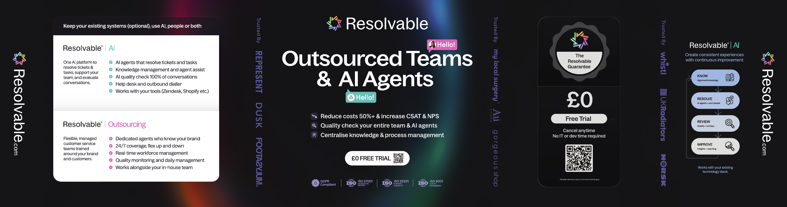

Two product identities

Software and connected capabilities
Approved knowledge, customer-facing AI, advisor tools and useful insight.

Managed customer service people
Trained teams, coverage and the management around the work.
Independent offers that can work together. Confirm the actual scope and separate commercial terms.
Exact colours from supplied SVGs
The logo symbol, AI teal and Outsourcing pink retain their original geometry and fills. Backgrounds, layout sizes and type settings in this board are proposed working defaults.
Know → Resolve → Review → Improve
Framework visually observed in the supplied stand. Use as a connected operational story, rather than four product packages.
KnowApproved knowledgeResolveAI + peopleReviewQuality + feedbackImproveInsight + coaching
Typography: family still unverified
The supplied text is outlined and contains no named fonts. Website CSS could not be audited. This board uses Arial as a temporary substitute; it is not identified as the official brand font.
Strong, readable headlines.
Use a clean sans serif, a clear hierarchy, short paragraphs and space around the message.
Warm. Capable. Practical.
Write in British English. Explain the customer need, the mechanism and the next step. Keep claims specific and evidenced.
Proposed companion icons
Original 24 × 24 outline icons created for this working skill. These are not supplied or approved official feature icons.
agent-assist
ai-agent
analytics
data-insights
dialler
helpdesk
knowledge
outsourcing
quality
receptionist
survey
translation
The supplied exhibition reference

Campaign claims and offer terms must be rechecked before reuse. PDF colour conversions can differ from exact SVG master colours.